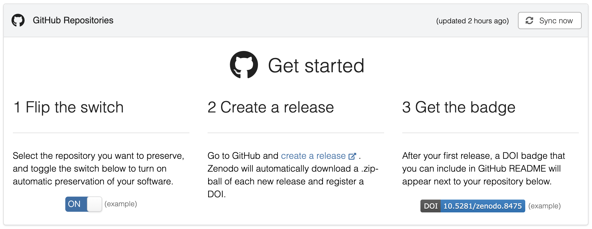

Antwerp DH Summer School 2026 3 July 2026
01
An edition sitting in a repo is not published.
GO FAIR principles
Wilkinson et al. 2016, Scientific Data
F
Findable
rich metadata and a persistent identifier
→ today: a DOI
A
Accessible
retrievable by humans and machines
→ today: open hosting
I
Interoperable
standard formats others can parse
✓ all week: TEI-XML
R
Reusable
clear licence, provenance, versions
→ today: licence + release
02
browse editions:
Catalog of Digital Scholarly Editions ·
Catalogue of Digital Editions
The TEI file is the website: a small JavaScript library teaches the browser to display TEI tags directly, styled with plain CSS. One source, no transformation pipeline — and anything beyond display is yours to build.
Transform once, serve forever: a generator bakes the TEI into plain HTML pages
that any host can serve — GitHub Pages, for free. No moving parts after
the build: nothing very little to patch, and nothing very little left to break.
DIY-frankensTEIn · Endings-compliant editions (UVic) · minimal computing
Edition-shaped software: ready-made reading environments — facsimile beside transcription, edition levels, critical apparatus, witness comparison. You configure instead of program, and the result is still just files on a web server.
Codice Pelavicino (EVT) · Versioning Machine samples · LERA demos
The edition as an application: an XML database answers readers’ queries live: full-text search, filtering, views on demand, etc. The most powerful end of the axis. Somebody must run, patch and migrate the server.
edition humboldt digital · TEI Publisher registry · TEI Publisher demos
03
<licence> in the teiHeader. Undeclared = all rights
reserved.
CC license chooser
choosealicense.com
No license = all rights reserved — reuse is legally blocked, and the R of FAIR fails.
04
GitHub Pages is a website. A website is not an archive.
the deposit
free extras

{
"title": "My Digital Edition",
"creators": [
{ "name": "Last, First",
"orcid": "0000-0000-0000-0000" }
],
"license": "cc-by-4.0"
}
.zenodo.json — what Zenodo reads
at deposit time. Without it, Zenodo guesses
cff-version: 1.2.0
message: "If you use this edition, cite it."
title: "My Digital Edition"
authors:
- family-names: Last
given-names: First
license: CC-BY-4.0
CITATION.cff — what GitHub reads:
adds a “Cite this repository” button
(citation-file-format.github.io)
the license — the choice you just made, written where machines can read it: the deposit displays it, and reuse is unambiguous
your identity — an ORCID is a persistent identifier for you: it survives name changes and moves, and ties the edition to its editor
[](https://doi.org/<doi>)
One line in the README: the edition announces its own citable, archived self.
shields.io renders badges for anything — DOI, license, release — as simple, reliable images
Sometimes the repo must not name you — yet.
05
.zenodo.json to the repo root06
01 / 04
02 / 04
03 / 04
04 / 04